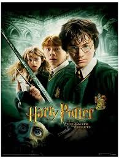
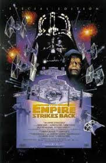
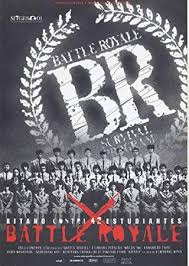

Human being with an entrepreneurial mindset.
|  | The plot follows Harry's second year at Hogwarts School of Witchcraft and Wizardry, during which a series of messages on the walls of the school's corridors warn that the "Chamber of Secrets" has been opened and that the "heir of Slytherin" would kill all pupils who do not come from all-magical families. These threats are found after attacks which leave residents of the school petrified. Throughout the year, Harry and his friends Ron and Hermione investigate the attacks. |
|  | The film is set three years after Star Wars. The Galactic Empire, under the leadership of the villainous Darth Vader and the mysterious Emperor, is in pursuit of Luke Skywalker and the rest of the Rebel Alliance. While Vader relentlessly pursues the small band of Luke's friends—Han Solo, Princess Leia Organa, and others—across the galaxy, Luke studies the Force under Jedi Master Yoda. When Vader captures Luke's friends, Luke must decide whether to complete his training and become a full Jedi Knight or to confront Vader and save them. |
|  | The film follows a group of junior high schoolers forced to fight to the death by the Japanese government. |